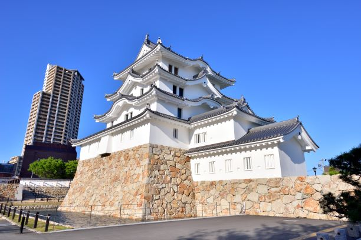

尼崎城は江戸時代に築かれた城で、尼崎市の歴史を象徴する建物の一つです。 現在の天守は2019年に再建されたもので、内部は資料館として公開されています。 城の中では尼崎の歴史や文化について学ぶことができ、展望フロアからは市内を一望することもできます。 観光客だけでなく、地元の人々にも親しまれている人気のスポットです。
寺町は尼崎市にある歴史的なエリアで、多くの寺院が集まっていることで知られています。 江戸時代には城下町の一部として整備され、現在でもその面影を残しています。